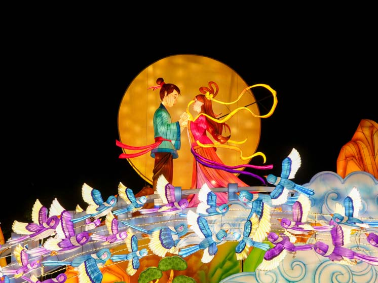

Mid-Autumn Festival🌙 中秋节
(Zhōng qiū jié) also known as the Moon Festival or Mooncake Festival, celebrates family reunion, harvest, and the full moon. It is a time for people to give thanks for the harvest, pray for good fortune, and appreciate the beauty of the moon, which symbolizes completeness and family togetherness.
Festival Highlights

Mooncakes
Traditional pastries with rich fillings. With various flavours from salt to sweet.

Lanterns
Colourful lanterns shaped like animals, flowers, or even the moon, create a festive atmosphere.

Light Displays
Witness the magic as the light displays illuminates the night sky.
Mooncakes (月饼) symbolize completeness and reunion. Their round shape represents the full moon and family togetherness. Traditionally given as gifts, they often contain salted egg yolks to represent the moon. Modern variations include snow skin mooncakes and unique flavors ranging from matcha to durian.
Did you know?
Originating over 700 years ago, mooncakes have an extensive history behind them. In the 13th century, the Mongols successfully invaded China, starting the oppressive Yuan dynasty (1271-1368). It is said that i an attempt to overthrow the Mongols, a rebel leader’s confidant Liu Bowen suggested a rebellion to coincide with the Mid-Autumn Festival. Liu Bowen would give residents mooncakes with the permission of the Mongols, as a blessing of longevity to the Mongol leader. However, inside each cake there was a piece of paper saying ‘kill the Mongols on the 15th day of the 8th month.’ This plan was successful and the Mongols were soon overthrown. Today, unlike the story might suggest, mooncakes are typically given as gifts to friends and family as an expression of love and good wishes during the Mid-Autumn Festival.
Did you know?
Originating over 700 years ago, mooncakes have an extensive history behind them. In the 13th century, the Mongols successfully invaded China, starting the oppressive Yuan dynasty (1271-1368). It is said that i an attempt to overthrow the Mongols, a rebel leader’s confidant Liu Bowen suggested a rebellion to coincide with the Mid-Autumn Festival. Liu Bowen would give residents mooncakes with the permission of the Mongols, as a blessing of longevity to the Mongol leader. However, inside each cake there was a piece of paper saying ‘kill the Mongols on the 15th day of the 8th month.’ This plan was successful and the Mongols were soon overthrown. Today, unlike the story might suggest, mooncakes are typically given as gifts to friends and family as an expression of love and good wishes during the Mid-Autumn Festival.
Lanterns (灯笼) in the Mid-Autumn Festival are one of the most iconic and cherished traditions of the celebration. These colorful, often intricately designed lanterns are typically made from paper, silk, or plastic, and are illuminated by candles or LED lights.
The custom of lighting lanterns during the Moon Festival dates back over 1,000 years. Originally used to worship the moon and celebrate the harvest, lanterns gradually became a symbol of joy, peace, and togetherness. Shapes like rabbits, moons, and lotuses each carry their own cultural meaning.
The custom of lighting lanterns during the Moon Festival dates back over 1,000 years. Originally used to worship the moon and celebrate the harvest, lanterns gradually became a symbol of joy, peace, and togetherness. Shapes like rabbits, moons, and lotuses each carry their own cultural meaning.
One of the most enchanting sights during the Mid-Autumn Festival in Singapore is the stunning light displays. Streets, parks, and cultural precincts such as Chinatown and Gardens by the Bay are adorned with colourful, intricate lanterns. These displays, often depicting mythical characters, animals, and traditional symbols, illuminate the night and create a magical atmosphere for everyone to enjoy.

Want to celebrate with us?
Join MoonFest's annually hosted celebration and experience the fun of Mid-Autumn Festival.
Register Now